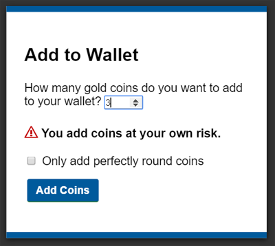

4.11. Interactive elements
4.11.1. The details element
- Categories:
- Flow content.
- Sectioning root.
- Interactive content.
- Palpable content.
- Contexts in which this element can be used:
- Where flow content is expected.
- Content model:
- One
summaryelement followed by flow content. - Tag omission in text/html:
- Neither tag is omissible
- Content attributes:
- Global attributes
open- Whether the details are visible- Allowed ARIA role attribute values:
-
grouprole (default - do not set) - Allowed ARIA state and property attributes:
- Global aria-* attributes
- Any
aria-*attributes applicable to the default role. - DOM interface:
-
interface
HTMLDetailsElement: HTMLElement { attribute boolean open; };
The details element represents a disclosure widget from which the
user can obtain additional information or controls.
The details element is not appropriate for footnotes. Please see §4.13.5 Footnotes for details on how to mark up footnotes.
If the details element has a summary child element, then the first summary child element represents the summary or legend of the details element. If there is no summary child
element, a user agent should provide its own legend (e.g. in English "Details"
or Spanish "Detalles").
The legend text should be presented in the language determined from the computed language of the element, if available, rather than from the locale of the browser/system.
The rest of the element’s contents represents the additional information or controls.
The open content attribute is a boolean
attribute. If present, it indicates that both the summary and the additional information is
to be shown to the user. If the attribute is absent, only the summary is to be shown.
When the element is created, if the attribute is absent, the additional information should be hidden; if the attribute is present, that information should be shown. Subsequently, if the attribute is removed, then the information should be hidden; if the attribute is added, the information should be shown.
The user agent should allow the user to request that the additional information be shown or
hidden. To honor a request for the details to be shown, the user agent must set the open attribute on the element to the empty string. To honor a request for the information to be hidden,
the user agent must remove the open attribute from the element.
This ability to request that additional information be shown or hidden may simply be
the activation behavior of the appropriate summary element, in the case such an element
exists. However, if no such element exists, user agents can still provide this ability through some
other user interface affordance.
Whenever the open attribute is added to or removed from
a details element, the user agent must queue a task that runs the
following steps, which are known as the details notification task steps, for this details element:
-
If another task has been queued to run the details notification task steps for this
detailselement, then abort these steps.When the
openattribute is toggled several times in succession, these steps essentially get coalesced so that only one event is fired. - Fire a simple event named
toggleat thedetailselement.
The task source for this task must be the DOM manipulation task source.
The open IDL attribute must reflect the open content attribute.
details element being used to hide technical
details in a progress report.
Copying... 25%
- Transfer rate:
- 452KB/s
- Local filename:
- /home/rpausch/raycd.m4v
- Remote filename:
- /var/www/lectures/raycd.m4v
- Duration:
- 01:16:27
- Color profile:
- SD (6-1-6)
- Dimensions:
- 320×240
<section class="progress window"> <h1>Copying "Really Achieving Your Childhood Dreams"</h1> <details> <summary>Copying... <progress max="375505392" value="97543282"></progress> 25%</summary> <dl> <dt>Transfer rate:</dt> <dd>452KB/s</dd> <dt>Local filename:</dt> <dd>/home/rpausch/raycd.m4v</dd> <dt>Remote filename:</dt> <dd>/var/www/lectures/raycd.m4v</dd> <dt>Duration:</dt> <dd>01:16:27</dd> <dt>Color profile:</dt> <dd>SD (6-1-6)</dd> <dt>Dimensions:</dt> <dd>320×240</dd> </dl> </details> </section>
details element can be used to hide some controls by default:
<details> <summary><label for="fn">Name & Extension:</label></summary> <p><input type="text" id="fn" name="fn" value="Pillar Magazine.pdf"> <p><label><input type="checkbox" name="ext" checked> Hide extension</label> </details>
One could use this in conjunction with other details in a list to allow the user
to collapse a set of fields down to a small set of headings, with the ability to open each
one.


In these examples, the summary really just summarizes what the controls can change, and not the actual values, which is less than ideal.
open attribute is added and removed
automatically as the user interacts with the control, it can be used in CSS to style the element
differently based on its state. Here, a stylesheet is used to animate the color of the summary
when the element is opened or closed.
CSS:
details > summary { transition: color 1s; color: black; } details[open] > summary { color: red; }
HTML:
<details> <summary>Automated Status: Operational</summary> <p>Velocity: 12m/s</p> <p>Direction: North</p> </details>
4.11.2. The summary element
- Categories:
- None.
- Contexts in which this element can be used:
- As the first child of a
detailselement. - Content model:
- Either: phrasing content.
- Or: one element of heading content.
- Tag omission in text/html:
- Neither tag is omissible
- Content attributes:
- Global attributes
- Allowed ARIA role attribute values:
button.- Allowed ARIA state and property attributes:
- Global aria-* attributes
- Any
aria-*attributes applicable to thebuttonrole. - DOM interface:
- Uses
HTMLElement.
The first summary child element of a details element represents a summary, caption, or legend for the rest of the contents of the
parent details element, if any.
The activation behavior of summary elements is to run the following steps:
- If this
summaryelement has no parent node, then abort these steps. - Let parent be this
summaryelement’s parent node. - If parent is not a
detailselement, then abort these steps. -
If the
openattribute is present on parent, then remove it. Otherwise, set parent’sopenattribute to the empty string.This will then run the details notification task steps.
4.11.3. Commands
4.11.3.1. Facets
A command is the abstraction behind buttons, and links. Once a command is defined, other parts of the interface can refer to the same command, allowing many access points to a single feature to share facets such as the Disabled State.
Commands are defined to have the following facets:
- Label
-
The name of the command as seen by the user.
- Access Key
-
A key combination selected by the user agent that triggers the command. A command might not have an Access Key.
- Hidden State
-
Whether the command is hidden or not.
- Disabled State
-
Whether the command is relevant and can be triggered or not.
- Action
-
The actual effect that triggering the command will have. This could be a scripted event handler, a URL to which to navigate, or a form submission.
User agents may expose the commands that match the following criteria:
- The facet is false (visible)
- The element is in a
Documentthat has an associated browsing context. - Neither the element nor any of its ancestors has a
attribute specified.
User agents are encouraged to do this especially for commands that have Access Keys, as a way to advertise those keys to the user.
4.11.3.2. Using the a element to define a command
An a element with an href attribute defines a command.
The Label of the command is the string given by the
element’s textContent IDL attribute.
The Access Key of the command is the element’s assigned access key, if any.
The of the command is true (hidden)
if the element has a attribute, and false otherwise.
The Disabled State facet of the command is true if the element or one of its ancestors is inert, and false otherwise.
The Action of the command, if the element has a
defined activation behavior, is to run synthetic click activation steps on the element. Otherwise, it is just to fire a click event at the element.
4.11.3.3. Using the button element to define a command
A button element always defines a command.
The Label, Access Key, , and Action facets of the command are determined as for a elements (see the previous section).
The Disabled State of the command is true if the element or one of its ancestors is inert, or if the element’s disabled state is set, and false otherwise.
4.11.3.4. Using the input element to define a command
An input element whose type attribute is in
one of the Submit Button, Reset Button, Image Button, Button, Radio Button, or Checkbox states defines a command.
The Label of the command is determined as follows:
- If the
typeattribute is in one of theSubmit Button,Reset Button,Image Button, orButtonstates, then the Label is the string given by thevalueattribute, if any, and a user agent-dependent, locale-dependent value that the user agent uses to label the button itself if the attribute is absent. - Otherwise, if the element is a labeled control, then the Label is the string given by the
textContentof the firstlabelelement in tree order whose labeled control is the element in question. (In DOM terms, this is the string given byelement.labels[0].textContent.) - Otherwise, if the
valueattribute is present, then the Label is the value of that attribute. - Otherwise, the Label is the empty string.
The Access Key of the command is the element’s assigned access key, if any.
The of the command is true (hidden)
if the element has a attribute, and false otherwise.
The Disabled State of the command is true if the element or one of its ancestors is inert, or if the element’s disabled state is set, and false otherwise.
The Action of the command, if the element has a
defined activation behavior, is to run synthetic click activation steps on the element. Otherwise, it is just to fire a click event at the element.
4.11.3.5. Using the option element to define a command
An option element with an ancestor select element and either no value attribute or a value attribute that is not the empty string defines a command.
The Label of the command is the value of the option element’s label attribute, if there is
one, or else the value of option element’s textContent IDL attribute,
with leading and trailing white space
stripped, and with any sequences of two or more space
characters replaced by a single U+0020 SPACE character.
The Access Key of the command is the element’s assigned access key, if any.
The of the command is true (hidden)
if the element has a attribute, and false otherwise.
The Disabled State of the command is true if
the element is disabled, or if its nearest ancestor select element is disabled, or if it or one
of its ancestors is inert, and false otherwise.
If the option’s nearest ancestor select element has a multiple attribute, the Action of the command is to pick the option element. Otherwise, the Action is to toggle the option element.
4.11.3.6. Using the accesskey attribute
on a label element to define a command
A label element that has an assigned access key and a labeled
control and whose labeled control defines a command, itself defines a command.
The Label of the command is the string given by the
element’s textContent IDL attribute.
The Access Key of the command is the element’s assigned access key.
The , Disabled State, and Action facets of the command are the same as the respective facets of the element’s labeled control.
4.11.3.7. Using the accesskey attribute
on a legend element to define a command
A legend element that has an assigned access key and is a child of a fieldset element that has a descendant that is not a descendant of the legend element and is neither a label element nor a legend element but that defines a command, itself defines a command.
The Label of the command is the string given by the
element’s textContent IDL attribute.
The Access Key of the command is the element’s assigned access key.
The , Disabled State, and Action facets of the command are the same as the respective
facets of the first element in tree order that is a descendant of the parent of the legend element that defines a command but is not
a descendant of the legend element and is neither a label nor a legend element.
4.11.3.8. Using the accesskey attribute to define a command on other elements
An element that has an assigned access key defines a command.
If one of the earlier sections that define elements that define commands define that this element defines a command, then that section applies to this element, and this section does not. Otherwise, this section applies to that element.
The Label of the command depends on the element. If
the element is a labeled control, the textContent of the first label element in tree order whose labeled control is the
element in question is the Label (in DOM terms, this is
the string given by element.labels[0].textContent). Otherwise,
the Label is the textContent of the element
itself.
The Access Key of the command is the element’s assigned access key.
The of the command is true (hidden)
if the element has a attribute, and false otherwise.
The Disabled State of the command is true if the element or one of its ancestors is inert, and false otherwise.
The Action of the command is to run the following steps:
- Run the focusing steps for the element.
- If the element has a defined activation behavior, run synthetic click activation steps on the element.
- Otherwise, if the element does not have a defined activation behavior, fire a
clickevent at the element.
4.11.4. The dialog element
- Categories:
- Flow content.
- Sectioning root.
- Contexts in which this element can be used:
- Where flow content is expected.
- Content model:
- Flow content.
- Tag omission in text/html:
- Neither tag is omissible
- Content attributes:
- Global attributes
open- Whether the dialog box is showing- Allowed ARIA role attribute values:
-
dialog(default - do not set) oralertdialog. - Allowed ARIA state and property attributes:
- Global aria-* attributes
- Any
aria-*attributes applicable to thedialogroles. - DOM interface:
-
interface
HTMLDialogElement: HTMLElement { attribute boolean open; attribute DOMString returnValue; void show(optional (MouseEvent or Element)anchor); void showModal(optional (MouseEvent or Element)anchor); void close(optional DOMStringreturnValue); };
The dialog element represents a part of an application that a user interacts with
to perform a task, for example a dialog box, inspector, or window.
The open attribute is a boolean
attribute. When specified, it indicates that the dialog element is active and
that the user can interact with it.
The following is an example of a modal dialog which provides a form for a user to add
coins to their wallet, as part of an online game.
<div> <!-- body content --> </div> <dialog> <h1>Add to Wallet</h1> <label for="num">How many gold coins do you want to add to your wallet?</label> <div><input name="amt" id="num" type="number" min="0" step="0.01" value="100"></div> <p><strong>You add coins at your own risk.</strong></p> <div><label><input name="round" type="checkbox">Only add perfectly round coins</label></div> <div><input type="button" onclick="submit()" value="Add Coins"></div> </dialog>

A dialog element without an open attribute
specified should not be shown to the user. This requirement may be implemented indirectly through
the style layer. For example, user agents that support the suggested
default rendering implement this requirement using the CSS rules described in §10 Rendering.
The tabindex attribute must not be specified on dialog elements.
- dialog .
show( [ anchor ] ) -
Displays the
dialogelement.The argument, if provided, provides an anchor point to which the element will be fixed.
- dialog .
showModal( [ anchor ] ) -
Displays the
dialogelement and makes it the top-most modal dialog.The argument, if provided, provides an anchor point to which the element will be fixed.
This method honors the
autofocusattribute. - dialog .
close( [ result ] ) -
Closes the
dialogelement.The argument, if provided, provides a return value.
- dialog .
returnValue[ = result ] -
Returns the
dialog’s return value.Can be set, to update the return value.
When the show() method is invoked, the user
agent must run the following steps:
- If the element already has an
openattribute, then abort these steps. - Add an
openattribute to thedialogelement, whose value is the empty string. - If the
show()method was invoked with an argument, set up the position of thedialogelement, using that argument as the anchor. Otherwise, set thedialogto the normal alignment mode. - Run the dialog focusing steps for the
dialogelement.
Each Document has a stack of dialog elements known as the pending dialog stack. When a Document is created, this stack must be
initialized to be empty.
When an element is added to the pending dialog stack, it must also be added to the top layer. When an element is removed from the pending dialog stack, it must be removed from the top layer. [FULLSCREEN]
When the showModal() method is invoked,
the user agent must run the following steps:
- Let subject be the
dialogelement on which the method was invoked. - If subject already has an
openattribute, then throw anInvalidStateErrorexception and abort these steps. - If subject is not in a
Document, then throw anInvalidStateErrorexception and abort these steps. - Add an
openattribute to subject, whose value is the empty string. - If the
showModal()method was invoked with an argument, set up the position of subject, using that argument as the anchor. Otherwise, set thedialogto the centered alignment mode. - Let subject’s node document be blocked by the modal dialog subject.
- Push subject onto subject’s node document’s pending dialog stack.
- Run the dialog focusing steps for subject.
The dialog focusing steps for a dialog element subject are as follows:
- If for some reason subject is not a control group owner at this point, or if it is inert, abort these steps.
-
Let control be the first non-inert focusable area in subject’s control group whose DOM anchor has an
autofocusattribute specified.If there isn’t one, then let control be subject.
- Run the focusing steps for control.
If at any time a dialog element is removed from a Document, then if that dialog is in that Document’s pending dialog stack, the following steps must be run:
- Let subject be that
dialogelement and document be theDocumentfrom which it is being removed. - Remove subject from document’s pending dialog stack.
- If document’s pending dialog stack is not empty, then let document be blocked by the modal dialog that is at the top of document’s pending dialog stack. Otherwise, let document be no longer blocked by a modal dialog at all.
When the close() method is invoked, the user
agent must close the dialog that the method was invoked on. If the method was invoked
with an argument, that argument must be used as the return value; otherwise, there is no return
value.
When a dialog element subject is to be closed, optionally with a return value result, the user agent
must run the following steps:
- If subject does not have an
openattribute, then abort these steps. - Remove subject’s
openattribute. - If the argument result was provided, then set the
returnValueattribute to the value of result. -
If subject is in its
Document’s pending dialog stack, then run these substeps:- Remove subject from that pending dialog stack.
- If that pending dialog stack is not empty, then let subject’s node document be blocked by the modal dialog that is at the top of the pending dialog stack. Otherwise, let document be no longer blocked by a modal dialog at all.
- Queue a task to fire a simple event named
closeat subject.
The returnValue IDL attribute, on
getting, must return the last value to which it was set. On setting, it must be set to the new
value. When the element is created, it must be set to the empty string.
Canceling dialogs: When a Document’s pending dialog
stack is not empty, user agents may provide a user interface that, upon activation, queues a task to fire a simple event named cancel that is cancelable at the top dialog element on
the Document’s pending dialog stack. The default action of this event
must be to check if that element has an open attribute, and
if it does, close the dialog with no return value.
An example of such a UI mechanism would be the user pressing the "Escape" key.
All dialog elements are always in one of two modes: normal alignment and centered alignment. When a dialog element
is created, it must be placed in the normal alignment mode. In this mode, normal CSS
requirements apply to the element. The centered alignment mode is only used for dialog elements that are in the top layer. [FULLSCREEN] [CSS-2015]
When an element subject is placed in centered alignment mode, and when it is in that mode and has new rendering boxes created, the user agent must set up the element such that its top static position, for the purposes of calculating the used value of the top property, is the value that would place the element’s top margin edge as far from the top of the viewport as the element’s bottom margin edge from the bottom of the viewport, if the element’s height is less than the height of the viewport, and otherwise is the value that would place the element’s top margin edge at the top of the viewport.
If there is a dialog element with centered alignment and that is being rendered when its browsing context changes viewport width (as
measured in CSS pixels), then the user agent must recreate the element’s boxes, recalculating its
top static position as in the previous paragraph.
This top static position of a dialog element with centered alignment must remain the element’s top static position until its boxes are recreated. (The element’s static
position is only used in calculating the used value of the top property in certain situations;
it’s not used, for instance, to position the element if its position property is set to static.)
When a user agent is to set up the position of an element subject using an anchor anchor, it must run the following steps:
-
If anchor is a
MouseEventobject, then run these substeps:- If anchor’s target element does not have a rendered box, or is in a different document than subject, then let subject be in the centered alignment mode, and abort the set up the position steps.
- Let anchor element be an anonymous element rendered as a box with zero height and width (so its margin and border boxes both just form a point), positioned so that its top and left are at the coordinate identified by the event, and whose properties all compute to their initial values.
Otherwise, let anchor element be anchor.
If an element to which another element is anchored changes rendering, the anchored element will be repositioned accordingly. (In other words, the requirements above are live, they are not just calculated once per anchored element.)
User agents in visual interactive media should allow the user to pan the viewport to access all
parts of a dialog element’s border box, even if the element is larger than the viewport and the viewport would otherwise not have a scroll mechanism (e.g., because the viewport’s overflow property is set to ).
The open IDL attribute must reflect the open content attribute.